"The major difference between a thing that might go wrong and a thing that cannot possibly go wrong is that when a thing that cannot possibly go wrong goes wrong it usually turns out to be impossible to get at or repair."
— Douglas Adams, Mostly Harmless (1992)
Why Replicate Data?
🌍 Latency — keep data geographically close to users
🛡️ Availability — keep the system running despite failures
📈 Scalability — scale out the number of machines serving reads
The difficulty lies in handling changes to replicated data.
Single-Leader
Multi-Leader
Leaderless
Three algorithms for replicating changes between nodes
Leaders and Followers
The most common replication approach: leader-based (master–slave)
Leader-Based Replication
Leader (master/primary) — accepts all writes
Followers (read replicas/slaves) — receive changes via replication log
Reads can go to leader or any follower
Used by: PostgreSQLMySQLMongoDBKafkaRabbitMQ
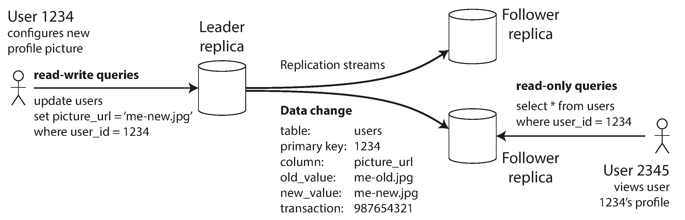
Synchronous vs Asynchronous
Follower 1: synchronous — leader waits for confirmation before reporting success
Follower 2: asynchronous — leader sends but doesn't wait
⚠️ If the sync follower is slow or down, writes are blocked!
Practice: semi-synchronous — one sync follower, rest async. If it fails, promote another to sync.
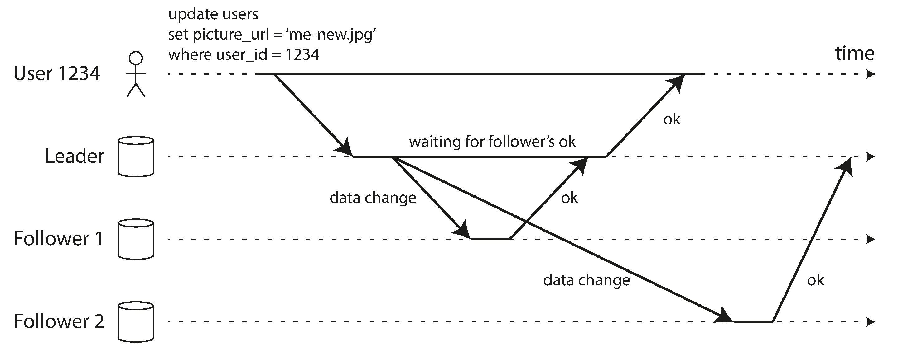
The Async Trade-off
✅ Fully Async
Leader continues processing even if all followers are behind
Lower write latency
More available
⚠️ Risk
If leader fails → unreplicated writes are lost
Write confirmed to client but not durable
Weakened durability guarantee
Research: chain replication achieves strong consistency with good availability (used in Azure Storage).
Setting Up New Followers
Can't just copy files — data is constantly in flux. Locking kills availability. Instead:
📸 Take a consistent snapshot of the leader's data (no lock needed)
📋 Copy the snapshot to the new follower node
🔗 Follower connects to leader, requests all changes since the snapshot
PostgreSQL: log sequence number
MySQL: binlog coordinates
✅ Follower processes the backlog → caught up → now receives live stream
Handling Node Outages
Follower Failure: Catch-up Recovery
Follower keeps a log of changes received. After restart:
Find last processed transaction in local log
Request all changes since then from leader
Apply them → caught up again
Leader Failure: Failover ⚠️
Much trickier! Need to:
Detect leader has failed (timeout)
Choose a new leader (election/controller)
Reconfigure system to use new leader
Failover: What Can Go Wrong? 💀
📉 Lost writes — new leader may not have all old leader's writes → unreplicated writes are discarded
🔑 Primary key reuse — GitHub incident: out-of-date MySQL follower promoted, reused autoincrement IDs → Redis/MySQL inconsistency → private data leaked to wrong users
🧠 Split brain — two nodes both think they're leader → both accept writes → data lost/corrupted. Safety: STONITH (Shoot The Other Node In The Head)
⏱️ Timeout tuning — too long = slow recovery; too short = unnecessary failovers under load spikes
Some teams prefer manual failover even when automatic is available.
Implementation of Replication Logs
How leader-based replication works under the hood
Four Approaches to Replication Logs
1. Statement-Based
Forward SQL statements (INSERT, UPDATE, DELETE)
⚠️ Breaks with: NOW(), RAND(), auto-increment, side effects
Used by: old MySQL, VoltDB (deterministic only)
2. Write-Ahead Log (WAL)
Ship the exact same append-only log to followers
⚠️ Byte-level detail → coupled to storage engine version
Used by: PostgreSQL, Oracle
3. Logical (Row-Based) Log ✅
Sequence of row-level changes (new values for inserts/updates, PK for deletes)
Decoupled from storage engine → backward compatible, parseable by external systems (change data capture)
Used by: MySQL binlog (row mode)
4. Trigger-Based
Application-level: triggers log changes to separate table
⚠️ Higher overhead, more bugs. Used for flexibility.
Used by: Oracle GoldenGate, Bucardo
Problems with Replication Lag
What goes wrong when followers fall behind
The Read-Scaling Architecture
Many reads, few writes? Add more followers and distribute reads.
This only works with async replication — sync would block on any node failure
Async followers may serve outdated data
Eventual consistency — "eventually" is deliberately vague: could be milliseconds or minutes
Three anomalies that application developers must be aware of:
Reading Your Own Writes
Monotonic Reads
Consistent Prefix Reads
Reading Your Own Writes
User submits data, then reads from a stale follower → looks like their data was lost!
Read-after-write consistency guarantees you see your own writes.
Strategies:
Read user's own data from leader
Track last update time; read from leader for 1 min after
Client remembers write timestamp → ensure replica is caught up
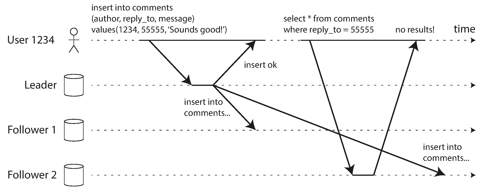
Monotonic Reads
User reads from replica A (fresh), then replica B (stale) → data appears to go backward in time!
A comment appears, then disappears on page refresh.
Monotonic reads: once you've seen a value, you won't later see an older value.
Solution: route each user to the same replica (hash of user ID). But handle replica failure gracefully.
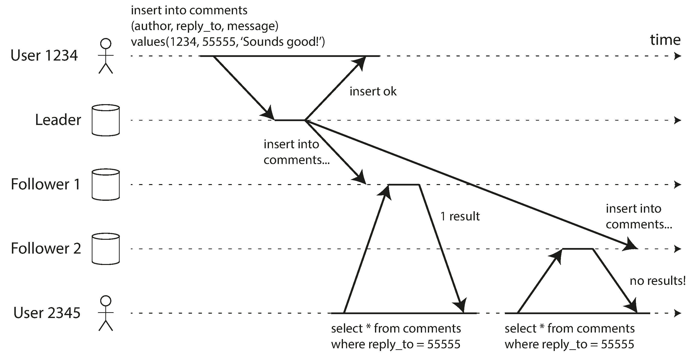
Consistent Prefix Reads
Causally related writes arrive out of order:
Mr. Poons: How far into the future
can you see, Mrs. Cake?
Mrs. Cake: About ten seconds usually.
But an observer sees:
Mrs. Cake: About ten seconds usually.
Mr. Poons: How far into the future
can you see?
Looks like Mrs. Cake has psychic powers! 🔮
Fix: write causally related data to the same partition.
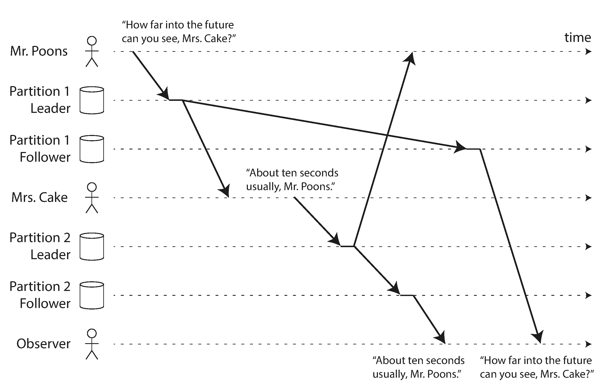
Solutions for Replication Lag
Application-level workarounds are complex and error-prone.
Better approach: use transactions to provide stronger guarantees at the database level.
Single-node transactions have existed for a long time
Distributed databases often abandoned them ("too expensive")
But that's overly simplistic — we'll revisit in Chapters 7 & 9
"Pretending that replication is synchronous when in fact it is asynchronous is a recipe for problems down the line."
Multi-Leader Replication
When one leader isn't enough
Why Multi-Leader?
Single-leader downside: all writes must go through one node. If you can't reach it, no writes.
Multi-leader: multiple nodes accept writes, replicate to each other.
🌐 Multi-Datacenter
One leader per DC. Within DC: normal leader-follower. Between DCs: leader-to-leader.
📱 Offline Clients
Each device is a "datacenter" with its own leader. Sync when online. (Calendar apps!)
👥 Collaborative Editing
Each user's browser is a replica. Changes replicated async. (Google Docs, Etherpad)
Multi-Datacenter Operation
A leader in each datacenter:
⚡ Performance — writes go to local DC, async to others
🛡️ DC outage tolerance — each DC operates independently
🌐 Network tolerance — inter-DC link issues don't block writes
Big downside: write conflicts when same data is modified in two DCs.
Two users edit the same wiki page title simultaneously:
User 1: A → B (on leader 1) ✅
User 2: A → C (on leader 2) ✅
When replicated → conflict detected!
In single-leader: second write would block or abort. In multi-leader: both succeed locally, conflict discovered later.
Sync conflict detection defeats the purpose of multi-leader.
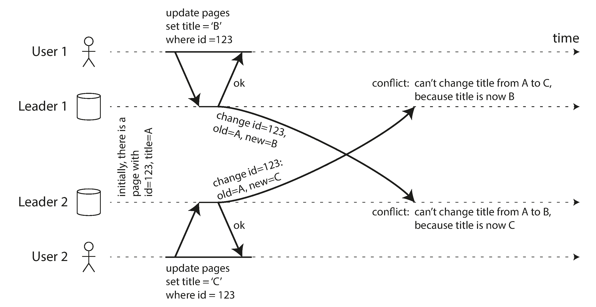
Conflict Resolution Strategies
🚫 Conflict Avoidance
Route all writes for a record to the same leader. Simplest and recommended!
Example: route each user to their "home" datacenter.
Breaks down if you need to reroute (DC failure, user moves).
🔀 Convergent Resolution
All replicas must arrive at the same final value:
Last Write Wins (timestamp) — popular but loses data
Replica priority — higher-numbered replica wins
Merge values — concatenate ("B/C")
Preserve all — resolve later in app code
Automatic Conflict Resolution
Custom conflict resolution code is complex and error-prone.
Amazon's shopping cart: conflict resolution preserved added items but not removals → items reappeared after being removed! 🛒
Research on automatic resolution:
CRDTs
Data structures that auto-resolve conflicts (sets, maps, counters). Used in Riak 2.0.
Mergeable Data Structures
Track history like Git, use three-way merge.
Operational Transform
Behind Google Docs / Etherpad. Designed for ordered lists (text).
Multi-Leader Replication Topologies
How writes propagate between leaders:
Circular — each node forwards to one other (MySQL default)
Star — one root forwards to all others
All-to-all — every leader sends to every other ✅
Circular/star: single node failure breaks the chain. All-to-all: better fault tolerance.
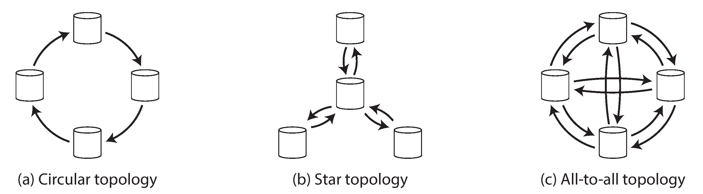
Causality Problems in All-to-All
Some network links may be faster → writes can "overtake" each other.
Client A inserts a row on leader 1. Client B updates that row on leader 3.
Leader 2 receives the update before the insert → tries to update a row that doesn't exist!
Timestamps can't fix this (clocks aren't synchronized). Need version vectors.
Many multi-leader systems handle this poorly (PostgreSQL BDR, Tungsten).
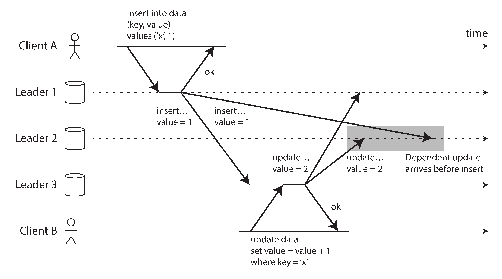
Leaderless Replication
Dynamo-style: no leader, any replica accepts writes
Writing Without a Leader
Client sends writes to all replicas in parallel. If enough acknowledge (e.g., 2 of 3), it's successful.
If a replica is down, it misses the write. When it comes back, reads detect staleness.
Two repair mechanisms:
Read repair — client reads from multiple replicas, writes fresh value back to stale ones
Anti-entropy — background process copies missing data between replicas
Used by: RiakCassandraVoldemort
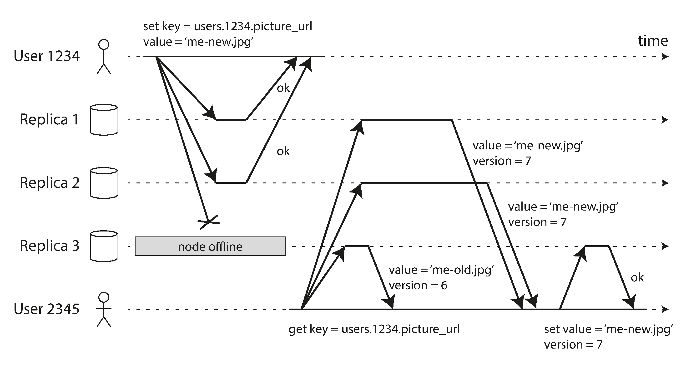
Quorums
n replicas, write to w, read from r.
As long as w + r > n, at least one read node has the latest value.
w + r > n
The quorum condition
Common: n=3, w=2, r=2 (tolerate 1 failure)
Or: n=5, w=3, r=3 (tolerate 2 failures)
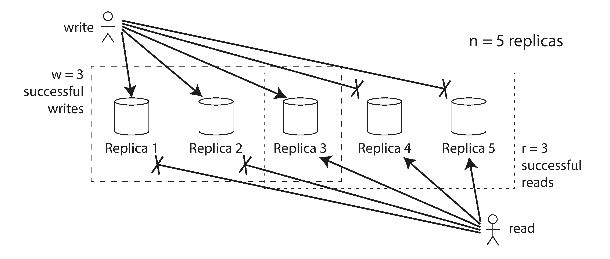
Limitations of Quorum Consistency
Even with w + r > n, stale reads can happen! Edge cases:
🔀 Sloppy quorum — writes may land on non-"home" nodes, no overlap guaranteed
⏱️ Concurrent writes — no clear ordering → must merge or pick winner
⚡ Concurrent read + write — write may be on only some replicas
❌ Partial write failure — succeeded on some but < w replicas; not rolled back
💥 Node restore — restored from old data → quorum condition broken
Dynamo-style DBs are optimized for eventual consistency. Don't treat quorum parameters as absolute guarantees.
Sloppy Quorums & Hinted Handoff
Network partition: client can reach some nodes but not the designated n "home" nodes.
Strict Quorum
Return errors — can't reach quorum.
Correct but unavailable.
Sloppy Quorum 🛋️
Accept writes on reachable "neighbor" nodes.
Once partition heals → hinted handoff: neighbor sends data to home node.
Like sleeping on a neighbor's couch when locked out!
Sloppy quorum ≠ true quorum — only guarantees durability, not read consistency.
Detecting Concurrent Writes
Defining "concurrent" and resolving conflicts in leaderless systems
The Concurrent Writes Problem
Two clients write to the same key on three replicas:
Node 1: sees only A's write
Node 2: A first, then B
Node 3: B first, then A
Nodes disagree on final value! If they just overwrite on each write → permanent inconsistency.
Need a deterministic strategy for convergence.
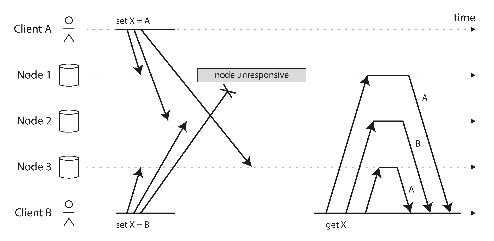
Last Write Wins (LWW)
Attach a timestamp to each write, keep the highest.
✅ Pros
Simple to implement
Eventually converges
Only conflict resolution in Cassandra
❌ Cons
Silently drops writes — concurrent writes reported as successful, but only one survives
Can even drop non-concurrent writes (clock skew)
Dangerous for data you can't afford to lose
Safe use: write each key once (immutable), e.g., use UUIDs as keys.
The "Happens-Before" Relationship
Two operations are concurrent if neither knows about the other.
A happens before B
B knows about A, or depends on A, or builds upon A.
Later operation overwrites earlier.
A || B (concurrent)
Neither knows about the other. Physical time doesn't matter!
Conflict → must be resolved.
"We simply call two operations concurrent if they are both unaware of each other, regardless of the physical time at which they occurred."
Capturing Causal Dependencies
Shopping cart example: two clients add items concurrently.
Server assigns version numbers:
v1: [milk]
v2: [eggs] (concurrent with v1)
v3: [milk, flour] (supersedes v1)
v4: [eggs, milk, ham] (supersedes v2)
v5: [milk, flour, eggs, bacon] (supersedes v3)
Client includes version number from prior read → server knows what it supersedes vs what's concurrent.
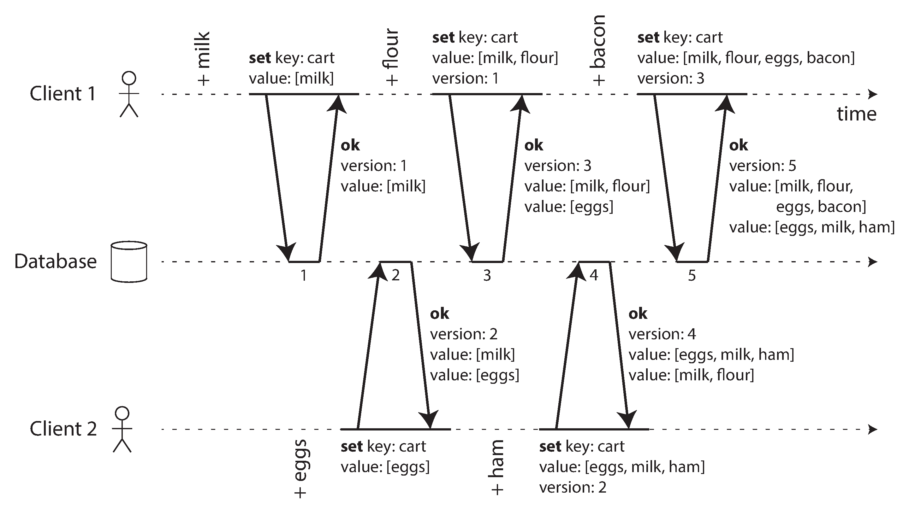
Causal Dependency Graph
Arrows show which operation happened before which.
Old versions get overwritten. No writes are lost.
Merging siblings: take the union of concurrent values.
⚠️ For removals, unions don't work → need tombstones (deletion markers with version numbers).
Better: use CRDTs (e.g., Riak's datatypes) to auto-merge siblings.
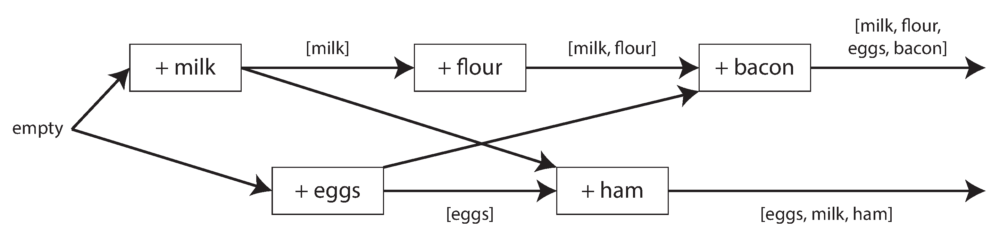
Version Vectors
Single version number works for one replica. With multiple replicas:
Need a version number per replica per key
Each replica increments its own version number on writes
Tracks version numbers seen from all other replicas
The collection = version vector
Riak calls it causal context and uses dotted version vectors.
⚠️ Often confused with vector clocks — related but not the same.
Version vectors ensure it's safe to read from one replica and write to another without losing data.
Summary
Replication approaches, trade-offs, and consistency
Three Replication Approaches
Single-Leader
All writes → one node
Easy to understand
No conflict resolution
⚠️ Single point of write failure
Multi-Leader
Multiple write nodes
Robust to DC failures
⚠️ Must handle conflicts
⚠️ Complex, "dangerous territory"
Leaderless
All replicas accept writes
Quorum-based reads/writes
⚠️ Eventual consistency
⚠️ Concurrent write handling
Consistency Guarantees Under Lag
Guarantees (strongest → weakest):
🔒 Read-after-write — see your own writes
📊 Monotonic reads — don't see time go backward
🔗 Consistent prefix — see causally ordered writes in order
⏳ Eventual consistency — replicas converge... eventually
Key Takeaways:
Async replication = potential data loss on failover
Application-level fixes are complex & error-prone
Transactions are the proper solution → Chapters 7 & 9
Concurrent writes need deterministic resolution
Questions?
Designing Data-Intensive Applications • Chapter 5
MCQ Quiz
100 Questions • Test Your Knowledge
Q1Replication
What is replication in the context of distributed data?
A) Encrypting data while maintaining a consistent and durable view of the data even when individual machines experience failures
B) Compressing data
C) Keeping a copy of the same data on multiple machines connected via a network
D) Splitting data across machines
Answer: C) Replication means keeping a copy of the same data on multiple machines connected via a network.
Q2Replication Goals
Which is NOT a reason for replicating data?
A) Reduce latency by keeping data geographically close to users
B) Increase write throughput
C) Increase availability when parts fail
D) Increase read throughput by serving from multiple machines
Answer: B) The three main reasons are: keeping data close to users (latency), availability despite failures, and scaling read throughput. Write throughput is addressed by partitioning, not replication.
Q3Challenge
What is the main challenge of replication?
A) Network configuration
B) Storing more data across geographically distributed nodes in multiple datacenters for improved availability and lower latency
C) Choosing hardware
D) Handling changes to replicated data
Answer: D) All the difficulty in replication lies in handling changes to replicated data.
Q4Replication Approaches
What are the three main approaches to replication?
A) Primary, secondary, tertiary
B) Single-leader, multi-leader, and leaderless
C) Synchronous, asynchronous, semi-synchronous
D) Hot, warm, cold
Answer: B) The three main approaches are single-leader, multi-leader, and leaderless replication.
Q5Leader-Based
In leader-based replication, who accepts writes?
A) Any replica while maintaining a consistent and durable view of the data even when individual machines experience failures
B) Only the leader (primary/master)
C) Only followers
D) All replicas simultaneously
Answer: B) One replica is designated the leader. Clients must send write requests to the leader.
Q6Followers
What do followers do in leader-based replication?
A) Delete old data by coordinating all write operations through a single designated primary node that defines the authoritative ordering
B) Generate their own data
C) Apply changes from the leader's replication log in the same order
D) Accept writes directly
Answer: C) Followers take the log from the leader and update their local copy, applying writes in the same order.
Q7Read Queries
In leader-based replication, who can serve read queries?
A) External cache only
B) Only the leader
C) Only followers while maintaining a consistent and durable view of the data even when individual machines experience failures
D) Any replica — leader or follower
Answer: D) Reads can be served by any replica (leader or follower), but writes are only accepted by the leader.
Q8Synchronous
What does synchronous replication guarantee?
A) Lower latency so the leader can continue accepting writes even if some followers are temporarily unreachable or have fallen behind
B) The follower has an up-to-date copy consistent with the leader before confirming to the client
C) Faster writes
D) No network usage
Answer: B) Synchronous means the leader waits until the follower confirms it received the write before reporting success.
Q9Sync Disadvantage
What is the main disadvantage of synchronous replication?
A) Complex configuration
B) Data loss so the leader can continue accepting writes even if some followers are temporarily unreachable or have fallen behind
C) If the synchronous follower is unresponsive, the leader must block all writes
D) Too much disk space
Answer: C) If the synchronous follower doesn't respond, writes cannot be processed — the leader is blocked.
Q10Semi-Synchronous
What is semi-synchronous replication?
A) All followers are synchronous
B) No followers so the leader can continue accepting writes even if some followers are temporarily unreachable or have fallen behind
C) Writes are buffered indefinitely
D) One follower synchronous, the rest asynchronous
Answer: D) In practice, one follower is synchronous and others are asynchronous. If the sync follower is slow, another is made synchronous.
Q11Fully Async
What is the risk of fully asynchronous replication?
A) Too many replicas
B) Uses too much bandwidth
C) If the leader fails, any unreplicated writes are lost
D) Too slow while maintaining a consistent and durable view of the data even when individual machines experience failures
Answer: C) If the leader fails and is not recoverable, any writes not yet replicated to followers are lost.
Q12New Follower
What is the correct process for setting up a new follower without downtime?
A) Copy files while writes continue
B) Restore from a week-old backup
C) Take a consistent snapshot, copy to follower, then request all changes since the snapshot
D) Lock the database and copy while periodically reporting their current log position to the leader for replication lag monitoring
Answer: C) Take a consistent snapshot of the leader, copy it, then the follower requests changes since the snapshot's log position.
Q13Log Position
What is the snapshot position called in different databases?
A) MySQL: binlog coordinates; PostgreSQL: log sequence number (LSN)
B) Timestamp
C) Offset under normal operating conditions with standard workload patterns and routine maintenance procedures
D) Checkpoint ID
Answer: A) MySQL calls it the binlog coordinates, PostgreSQL calls it the log sequence number (LSN).
Q14Follower Recovery
How does a follower recover after a crash?
A) Manual intervention required
B) It knows the last transaction processed, requests all changes since then from the leader
C) It deletes all data and restarts
D) Full data copy from leader by continuously applying changes from the replication log in sequential order as received from the leader node
Answer: B) The follower can connect to the leader and request all data changes since its last processed transaction.
Q15Leader Failover
What is failover?
A) Adding a new follower
B) Merging databases by detecting the unresponsive node through periodic heartbeat messages and initiating a coordinated leadership election
C) One of the followers being promoted to leader when the existing leader fails
D) Shutting down the system
Answer: C) If the leader fails, a follower needs to be promoted to be the new leader — this process is called failover.
Q16Failover Steps
What are the three steps of failover?
A) Encrypt, transfer, decrypt
B) Stop, copy, start by detecting the unresponsive node through periodic heartbeat messages and initiating a coordinated leadership election
C) Determine leader failed, choose new leader, reconfigure system
D) Backup, restore, verify
Answer: C) 1) Determine leader has failed (usually via timeout), 2) choose a new leader, 3) reconfigure the system to use the new leader.
Q17Failover Risk
What dangerous scenario can occur during failover with auto-incrementing IDs?
A) The new leader may have missed writes, and if the old leader rejoins, conflicting primary keys can cause data corruption (e.g., GitHub's Redis/MySQL incident)
B) No risk exists by detecting the unresponsive node through periodic heartbeat messages and initiating a coordinated leadership election without losing any committed data that was already acknowledged to the client application before the outage occurred
C) Data is encrypted by detecting the unresponsive node through periodic heartbeat messages and initiating a coordinated leadership election
D) The system speeds up by detecting the unresponsive node through periodic heartbeat messages and initiating a coordinated leadership election
Answer: A) At GitHub, an out-of-date follower was promoted, causing primary key conflicts with Redis-cached values, leading to private data disclosure.
Q18Split Brain
What is 'split brain' in replication?
A) A backup strategy across geographically distributed nodes in multiple datacenters for improved availability and lower latency
B) A hardware failure
C) Two nodes both believe they are the leader, accepting conflicting writes
D) A network upgrade
Answer: C) Split brain occurs when two nodes both believe they are leader, leading to conflicting writes and potential data loss.
Q19Timeout
Why is choosing the right timeout for leader failure detection tricky?
A) Too long means extended downtime; too short means unnecessary failovers during load spikes
B) Timeouts are always correct
C) Timeouts don't matter while followers serve read-only traffic to reduce the query load on the primary and improve overall throughput
D) Only manual detection works
Answer: A) A longer timeout means longer recovery time. A shorter timeout could cause unnecessary failovers from temporary spikes.
Q20Replication Log
What is statement-based replication?
A) Binary data copy
B) Copying disk blocks
C) Leader logs every write statement (INSERT, UPDATE, DELETE) and forwards to followers
D) Snapshot-based across geographically distributed nodes in multiple datacenters for improved availability and lower latency
Answer: C) The leader logs every write request (statement) and sends that statement log to followers.
Q21Statement Issues
Why is statement-based replication problematic?
A) It's too simple
B) It uses too much storage
C) Nondeterministic functions (NOW(), RAND()), auto-incrementing columns, and side effects break it
D) It's too efficient — a pattern that has been refined over decades of distributed systems research
Answer: C) Statements with NOW(), RAND(), auto-increment in different order, or triggers with side effects produce different results on replicas.
Q22WAL Shipping
What is Write-Ahead Log (WAL) shipping?
A) Sending SQL statements as an append-only sequence of records that captures every state-changing operation applied to the database over time
B) Copying application code
C) Sending the exact byte-level append-only log used by the storage engine to followers
D) Transmitting checksums
Answer: C) WAL shipping sends the storage engine's append-only log (exact byte sequences) to followers.
Q23WAL Disadvantage
What is the main disadvantage of WAL shipping?
A) The log describes data at a very low level (disk blocks/bytes), tightly coupling it to the storage engine version
B) Too slow under normal operating conditions with standard workload patterns and routine maintenance procedures
C) Uses too much memory
D) It's too abstract within the broader architecture of a distributed data-intensive application serving concurrent user requests
Answer: A) WAL data is at byte level, making it closely coupled to the storage engine. Different versions may not be compatible, preventing zero-downtime upgrades.
Q24Logical Log
What is a logical (row-based) log?
A) A debug log to enable reliable crash recovery by replaying all committed operations that had not yet been persisted to the data files
B) Human-readable text log
C) A file system log
D) A sequence of records describing writes at the row level (inserts, deletes, updates with column values)
Answer: D) A logical log describes writes at the granularity of a row: inserts contain new values, deletes contain the key, updates contain old/new values.
Q25Logical Log Benefit
What advantage does a logical log have over WAL?
A) Decoupled from storage engine internals, enabling different versions and even different storage engines
B) Faster writes to enable reliable crash recovery by replaying all committed operations that had not yet been persisted to the data files
C) Requires less network
D) Uses less CPU
Answer: A) A logical log is decoupled from the storage engine internals, making it easier to maintain backward compatibility and allowing leader/follower to run different versions.
Q26Trigger-Based
When would you use trigger-based replication?
A) When you need flexibility — like replicating only a subset of data or transforming data during replication
B) Always while maintaining a consistent and durable view of the data even when individual machines experience failures
C) When performance is critical
D) For all production systems
Answer: A) Trigger-based replication is useful when you need flexibility, such as replicating a subset or conflict resolution logic.
Q27Replication Lag
What is replication lag?
A) Disk write time
B) CPU processing time
C) The delay between a write on the leader and its reflection on a follower
D) Network delay across geographically distributed nodes in multiple datacenters for improved availability and lower latency
Answer: C) If an application reads from an asynchronous follower, it may see outdated information — the delay is replication lag.
Q28Eventual Consistency
What does eventual consistency mean?
A) Data is never consistent across all replicas so that every connected client observes the same logical state of the database at any point in time
B) Only the leader is consistent
C) If you stop writing and wait, followers will eventually catch up and be consistent with the leader
D) Data is always consistent
Answer: C) If you stop writing and wait, followers will eventually catch up — this effect is known as eventual consistency.
Q29Read-Your-Writes
What is read-your-own-writes consistency?
A) After a user submits data, they always see their own submitted data (though others may not yet)
B) All users see the same data
C) All reads go to the leader
D) Writes are immediate across all replicas so that every connected client observes the same logical state of the database at any point in time
Answer: A) Read-your-own-writes guarantees that if a user reloads a page after a write, they will always see their own update.
Q30Read-Your-Writes Impl
How can read-your-own-writes be implemented?
A) Always read from followers
B) Cache everything
C) Delay all reads through a coordinated protocol that guarantees atomic visibility of every committed modification
D) Read from the leader for data the user may have modified; use followers for other data
Answer: D) One approach: read user-modified data from the leader, other data from any follower.
Q31Cross-Device
What additional challenge exists for cross-device read-your-writes?
A) All devices use the same connection
B) No challenge and propagating the change through the replication log to all follower nodes for consistent durability
C) Different devices may route to different datacenters with different replication lag
D) Devices share memory
Answer: C) A user's different devices may connect to different datacenters. Metadata like last-update timestamp must be centralized.
Q32Monotonic Reads
What anomaly does monotonic reads prevent?
A) Network congestion
B) Slow writes while the database handles concurrent write operations transparently in the background
C) Disk failures
D) Moving backward in time — seeing newer data then older data on successive reads
Answer: D) Monotonic reads guarantees that a user won't read older data after having previously read newer data.
Q33Monotonic Impl
How is monotonic reads typically implemented?
A) Random follower selection
B) Round-robin selection from the most up-to-date replica to ensure consistent query results for the application
C) Each user always reads from the same replica (e.g., chosen by hash of user ID)
D) All reads from leader
Answer: C) Make each user always read from the same replica, chosen for example by a hash of the user ID.
Q34Consistent Prefix
What does consistent prefix reads prevent?
A) Disk full errors
B) Data corruption — a pattern that has been refined over decades of distributed systems research
C) Seeing an answer before the question — causally related writes appearing out of order
D) Slow networks
Answer: C) Consistent prefix reads guarantees that if a sequence of writes happens in a certain order, anyone reading will see them in that order.
Q35Consistent Prefix Problem
In which type of database is consistent prefix reads particularly problematic?
A) In-memory databases across all replicas so that every connected client observes the same logical state of the database at any point in time
B) Partitioned (sharded) databases where different partitions operate independently
C) Read-only databases
D) Single-node databases
Answer: B) In partitioned databases, different partitions operate independently, so there is no global ordering of writes.
Q36Multi-Leader
What is multi-leader replication also called?
A) Cluster replication
B) Master-master or active/active replication
C) Peer-to-peer by coordinating all write operations through a single designated primary node that defines the authoritative ordering
D) Cascade replication
Answer: B) Multi-leader configuration is also known as master-master or active/active replication.
Q37Multi-Leader Use Case
When does multi-leader replication make sense?
A) Small databases only
B) Single datacenter only
C) Read-only workloads while maintaining a consistent and durable view of the data even when individual machines experience failures
D) Multi-datacenter operation where each datacenter has its own leader
Answer: D) Multi-leader makes sense when you have multiple datacenters, each with its own leader for local write acceptance.
Q38Multi-DC Advantage
What performance advantage does multi-leader have over single-leader for multi-datacenter?
A) Faster reads while followers serve read-only traffic to reduce the query load on the primary and improve overall throughput
B) Writes are processed in the local datacenter without waiting for cross-datacenter replication
C) Less storage
D) Simpler configuration
Answer: B) Every write is processed in the local datacenter and replicated asynchronously, hiding inter-datacenter network delay from users.
Q39Offline Operation
Why are apps like calendar clients considered multi-leader replication?
A) They only read data
B) They use SQL while followers serve read-only traffic to reduce the query load on the primary and improve overall throughput
C) Each device acts as a leader that accepts writes offline, syncing later
D) They don't store data
Answer: C) Every device has a local database acting as a leader. When online, changes are synced asynchronously — a multi-leader topology.
Q40Collaborative Editing
How is real-time collaborative editing (like Google Docs) related to replication?
A) It's not related while maintaining a consistent and durable view of the data even when individual machines experience failures
B) It uses single-leader
C) It doesn't require conflict resolution
D) It's similar to multi-leader replication where each user's changes are a 'write' that must be replicated
Answer: D) Changes are instantly applied locally and asynchronously replicated — very similar to multi-leader replication with conflict resolution.
Q41Write Conflicts
What is the biggest problem with multi-leader replication?
A) Write conflicts — two leaders may concurrently accept conflicting writes
B) Too many replicas
C) Slow reads while followers serve read-only traffic to reduce the query load on the primary and improve overall throughput
D) High storage cost
Answer: A) The biggest problem is that write conflicts can occur, requiring conflict resolution.
Q42Conflict Avoidance
What is the simplest strategy for handling conflicts?
A) Delete conflicting data
B) Automatic resolution
C) Lock all records when multiple clients attempt to modify the same data item without coordinating their operations with each other
D) Conflict avoidance — ensure all writes for a record go through the same leader
Answer: D) The simplest strategy is to avoid conflicts by ensuring that all writes for a particular record go through the same leader.
Q43Last Write Wins
What is last-write-wins (LWW) conflict resolution?
A) Each write gets a timestamp; the 'latest' timestamp wins and others are discarded
B) Both writes are kept through a coordinated protocol that guarantees atomic visibility of every committed modification
C) The first write wins
D) The longest write wins
Answer: A) Give each write a unique ID or timestamp, pick the highest as the winner, discard others. This is prone to data loss.
Q44LWW Problem
What is the problem with last-write-wins?
A) It uses too much memory
B) It's too slow and propagating the change through the replication log to all follower nodes for consistent durability
C) It requires manual intervention
D) It achieves convergence at the cost of durability — conflicting writes are silently discarded
Answer: D) LWW is prone to data loss because writes that are not 'last' are silently discarded.
Q45Custom Resolution
When can custom conflict resolution logic run?
A) Only at write time
B) On write (as the DB detects a conflict) or on read (storing conflicts and returning all versions)
C) Only at read time as an append-only sequence of records that captures every state-changing operation applied to the database over time
D) Only during backup
Answer: B) Some systems let you write a handler called on write (Bucardo), others store conflicts and resolve on read (CouchDB).
Q46CRDTs
What are CRDTs?
A) Conflict Resolution Data Types under normal operating conditions with standard workload patterns and routine maintenance procedures
B) Centralized Replication Distribution Tools
C) Data structures that can be concurrently edited and automatically resolve conflicts in sensible ways
D) Compressed Replicated Data Tables
Answer: C) CRDTs (Conflict-free Replicated Data Types) are data structures that can be concurrently edited by multiple users and automatically resolve conflicts.
Q47Replication Topologies
What are the three replication topologies for multi-leader?
A) Star, ring, mesh
B) Bus, tree, hybrid
C) Circular, star, and all-to-all
D) Point-to-point, multicast, broadcast
Answer: C) The most common topologies are circular, star (hub-and-spoke), and all-to-all.
Q48All-to-All
What is the most common multi-leader topology?
A) Ring by coordinating all write operations through a single designated primary node that defines the authoritative ordering
B) All-to-all
C) Circular
D) Star
Answer: B) All-to-all is the most common topology, where every leader sends writes to every other leader.
Q49Topology Issue
What problem can the all-to-all topology have?
A) Some network links may be faster, causing writes to arrive out of causal order
B) Too few connections
C) Single point of failure
D) Data loss between the interconnected nodes in the distributed cluster to ensure messages reach every intended destination
Answer: A) Some network links may be faster than others, causing messages to overtake each other and arrive out of causal order.
Q50Leaderless
In leaderless replication, how are writes handled?
A) One leader accepts writes
B) Only one replica stores data
C) Writes go to a queue through a coordinated protocol that guarantees atomic visibility of every committed modification
D) The client sends writes to several replicas directly, or a coordinator does so
Answer: D) The client sends its write to several replicas, or a coordinator node does this on behalf of the client.
Q51Leaderless History
Which database pioneered the leaderless approach that inspired Dynamo-style databases?
A) Amazon's Dynamo (internal)
B) MongoDB
C) MySQL by coordinating all write operations through a single designated primary node that defines the authoritative ordering
D) PostgreSQL
Answer: A) Amazon used leaderless replication in its in-house Dynamo system, inspiring Riak, Cassandra, and Voldemort.
Q52Read Repair
What is read repair?
A) Restarting the database
B) Fixing corrupted disks
C) When a client reads from multiple replicas and detects stale values, it writes the newer value back
D) Rebuilding indexes while the database handles concurrent write operations transparently in the background
Answer: C) When a client makes a read from several replicas and detects stale responses, it writes the newer value back to the stale replica.
Q53Anti-Entropy
What is the anti-entropy process?
A) Cooling servers as part of a comprehensive strategy for ensuring data integrity and query performance at scale
B) Encrypting data
C) A background process that constantly looks for differences between replicas and copies missing data
D) Compressing logs
Answer: C) A background process constantly looks for differences between replicas and copies any missing data from one replica to another.
Q54Quorum
What is the quorum condition for reads and writes?
A) n = r + w by requiring a minimum threshold of participating nodes to acknowledge each operation before it is considered successful
B) w + r > n (write quorum + read quorum > total nodes)
C) r = w = n
D) w + r = n
Answer: B) If w + r > n, at least one of the r nodes read from must have seen the most recent write.
Q55Typical Quorum
With n=3 replicas, what is a common quorum configuration?
A) w=1, r=3
B) w=3, r=3
C) w=1, r=1
D) w=2, r=2
Answer: D) A common choice is n=3, w=2, r=2, ensuring at least one node in common between writes and reads.
Q56Quorum Flexibility
What is the trade-off between w and r in quorum configuration?
A) Both must be equal — a pattern that has been refined over decades of distributed systems research
B) Smaller w means faster writes but requires larger r for reads, and vice versa
C) No trade-off
D) Only w matters
Answer: B) With n=3, if w=1 (fast writes, less durable), then r must be 3 to still satisfy w+r>n.
Q57Sloppy Quorum
What is a sloppy quorum?
A) A quorum with no reads
B) Writes accepted by w nodes even if they're not the designated home nodes for that key
C) A quorum for delete operations
D) An exact quorum by requiring a minimum threshold of participating nodes to acknowledge each operation before it is considered successful
Answer: B) In a sloppy quorum, writes and reads still require w and r successful responses, but those may include nodes not among the designated home nodes.
Q58Hinted Handoff
What is hinted handoff?
A) Deleting old data
B) Index rebuilding within the broader architecture of a distributed data-intensive application serving concurrent user requests
C) Manual data transfer
D) When a sloppy quorum node that temporarily accepted writes sends them to the proper home node once it recovers
Answer: D) Once the original home node is back online, the temporary node sends any writes it accepted to the home node — this is hinted handoff.
Q59Multi-DC Leaderless
How does Cassandra handle multi-datacenter leaderless replication?
A) n includes nodes in all DCs, but the client waits for quorum within only the local DC
B) Only replicates within one DC
C) Doesn't support multi-DC across geographically distributed nodes in multiple datacenters for improved availability and lower latency
D) Uses single-leader across DCs
Answer: A) Cassandra and Voldemort implement n as including nodes in all datacenters, but writes wait for acknowledgment only from the local DC.
Q60Concurrent Writes
Two writes to the same key are 'concurrent' if:
A) They happen at the exact same millisecond
B) Neither happened before the other — each operation was unaware of the other
C) They have the same value and the system must resolve them through application-level merge logic or automatic convergence to a single agreed-upon value
D) They come from the same client
Answer: B) Two operations are concurrent if neither happened before the other — they were unaware of each other.
Q61Version Vectors
What are version vectors used for?
A) Encrypting replication
B) Compressing data to establish a partial ordering of causally related events without relying on perfectly synchronized physical clocks
C) Measuring latency
D) Tracking which value was overwritten and which are concurrent (siblings) across multiple replicas
Answer: D) Version vectors (or vector clocks) track causal dependencies and determine which writes are concurrent vs. causally ordered.
Q62Happens-Before
What does the 'happens-before' relationship mean?
A) Operation A happened before B if B knew about A or depended on A
B) One event is faster as part of a comprehensive strategy for ensuring data integrity and query performance at scale
C) Events are in different datacenters
D) Events are simultaneous
Answer: A) An operation A happened before B if B knew about A, built upon A, or depended on A in some way.
Q63Conflict Detection
How are conflicts detected in leaderless systems?
A) By comparing timestamps only
B) Manual inspection when multiple clients attempt to modify the same data item without coordinating their operations with each other
C) They can't be detected
D) Using version numbers: if a write doesn't include all previous version numbers, it's concurrent
Answer: D) The server assigns version numbers and uses them to determine whether writes are sequential or concurrent.
Q64Merging Siblings
When siblings (concurrent values) exist, the client must:
A) Ignore both and produce a single coherent value that preserves all user intent across the conflicting versions
B) Delete both
C) Pick the first one
D) Merge them and write back the merged value
Answer: D) Siblings must be merged by the client, taking the union or performing application-specific merge logic.
Q65Tombstones
Why are deletion markers (tombstones) needed?
A) To compress data
B) To mark favorite records
C) For encryption in a typical production deployment with multiple interconnected nodes spanning several availability zones
D) Without them, a deleted item may be resurrected when merging siblings
Answer: D) If you use set union for merging and an item was removed, you need a tombstone to prevent it from being re-added during the merge.
Q66WAL Examples
Which databases use WAL-based replication?
A) MySQL only while maintaining a consistent and durable view of the data even when individual machines experience failures
B) MongoDB only
C) PostgreSQL and Oracle, among others
D) Redis only
Answer: C) PostgreSQL and Oracle use WAL-based (write-ahead log) replication.
Q67MySQL Replication
What type of replication log does MySQL use by default?
A) WAL shipping across geographically distributed nodes in multiple datacenters for improved availability and lower latency
B) Statement-based only
C) Trigger-based
D) Row-based logical log (binlog)
Answer: D) MySQL's default replication uses a row-based format in its binlog (logical log).
Q68CDC
How is logical log replication useful beyond just replication?
A) It enables Change Data Capture (CDC) — sending DB contents to external systems like data warehouses
B) It's not useful elsewhere
C) Only for backups across geographically distributed nodes in multiple datacenters for improved availability and lower latency
D) Only for encryption
Answer: A) A logical log format is useful for change data capture — sending contents to external systems like data warehouses or search indexes.
Q69Research Solutions
What research project aimed to solve replication lag guarantees?
A) NoSQL manifesto
B) Causal consistency and solutions like those being developed for single-node transaction behavior on replicas
C) SQL Standard 2.0
D) MapReduce while maintaining a consistent and durable view of the data even when individual machines experience failures
Answer: B) Researchers have explored causal consistency and providing transaction-like guarantees in replicated databases.
Q70Failover Automation
Why do some operations teams prefer manual failover?
A) Automatic failover doesn't work
B) Manual uses less network
C) Manual is faster without losing any committed data that was already acknowledged to the client application before the outage occurred